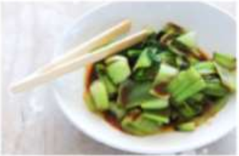

YOKO'S KITCHEN
JAPANESE COOKING CLASSES

Bok Choi

Terlyaki Sauce
Japanese Vegetarian
Five week course in London
A five week introduction to traditional Japanese vegetarian meals, teaching you a selection of rice and noodle dishes.
Sauces Masterclass
One day workshop
An intensive one-day course looking at how to create the most delicious sauces for use in a range of Japanese cookery.
Popular Recipies
Yakitori (grilled chicken)
Tsukune (minced chicken patties)
Okonomiyaki (savory pancakes)
Mizutaki (chicken stew)
Contact
Yoko's Kitchen 27 Redchurch Street Shoreditch London E2 7DP